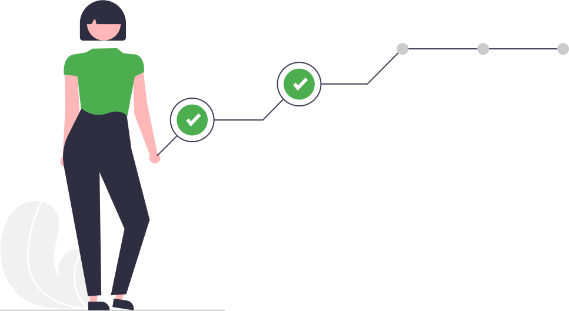

O Início de Tudo

- Começamos a controlar a colheita de café da nossa propriedade pela planilha do ExcelAjudou muito a controlar a colheita, mas com o tempo trouxe várias dores de cabeça, além de ser limitado.
- Início do desenvolvimento do aplicativo9 anos após Erli sair da roça e trabalhar com desenvolvimento de software, ele inicia o desenvolvimento do aplicativo para ajudar seu irmão na colheita do café.
- Utilização do aplicativo para controle da colheitaIrmão do Erli passa a utilizar o aplicativo.
Mais de 100 pessoas instalam o aplicativo, isso sem nenhuma divulgação ou propaganda. - Estruturamos todo o aplicativo e o negócio
- O Aplicativo
- - Reescrevemos todo o aplicativo do zero para permitir crescer.
- Criamos mais de 10 cadastros no aplicativo para servir como base para o cálculo custo de produção.
- Iniciamos a documentação de todo aplicativo. - O Negócio
- - Evoluímos a ideia do aplicativo para tratar o Mais Café como uma empresa.
- Foi montado um time, não está somente na mão de uma pessoa.
- Definimos a cultura da empresa.
- Melhoramos a cara do negócio, criamos vídeos institucional, website, etc.
- Foco no desenvolvimento do aplicativo
Em 2022 o foco da equipe é no desenvolvimento do aplicativo, vamos focar nesse ano em melhorar o processo de colheita, saiba mais.
Nosso Produto
O aplicativo pode ser comparado a uma lavoura de 2 a 3 anos, já compensa colher o café, mas a lavoura não está no auge de sua produção.
Assim é o aplicativo, não temos todos os recursos disponíveis, mas acreditamos que já pode te ajudar.
Recursos úteis:- Registrar no mapa a localização dos talhões e medir os hectares da área.
- Registrar a colheita do café, separando para cada talhão e apanhador.
- Registrar a venda do café beneficiado.
- Lançar as doenças, pragas e anotações direto pelo mapa.
- Suporte para várias propriedades.

Nossos Valores
- Agir com integridade e dentro dos mais elevados padrões éticos não é negociável.
- Fazemos o que é certo e sempre cumprimos nossas promessas.
- Transparência em tudo que fazemos e com todos.
- Confiamos uns nos outros e trabalhamos juntos para fazer o trabalho, a melhor ideia vence.
- Atrair e reter talentos da mais alta qualidade e desenvolvê-los para que se tornem melhores do que nós.
- Tomamos decisões e agimos como donos do negócio, pensamos a longo prazo e não tomamos atalhos, para construir uma empresa sustentável.
- Acreditamos que todos podem ser líderes e que a verdadeira liderança é conquistada por meio de nossas ações, não com nossos títulos.
- Reconhecemos, recompensamos e celebramos o desempenho excepcional.
- Acreditamos que construir uma sociedade mais justa é possível quando pessoas incríveis estão dispostas a transformar vidas.
- Retribuir nosso crescimento com a sociedade é um dever.
- Consideramos o erro como parte do processo de aprendizagem, acreditamos que toda solução simples nasce de um experimento.
Nossa Missão
Tornar a Tecnologia Acessível aos Cafeicultores
Nossa missão vai além de criar soluções tecnológicas, é tornar acessível aos pequenos e médios cafeicultores o que há de melhor da tecnologia.
Saiba mais em objetivos.
Nossos Investidores

Não temos nenhum investidor, enxugamos ao máximo para gerar o mínimo possível de gastos.
Hoje não temos nenhuma receita, todos colaborares tem outro trabalho para se manter financeiramente.
Todos os gastos são pagos pelo Erli, mas estamos montando uma proposta de cobrança para os novos recursos que seja bom para todos.
Nosso Diferencial
Somos uma equipe apaixonados pelo o que fazemos, cheio de ideias e vontade de fazer a diferença. Parte de nós nasceu e cresceu em meio a cafeicultura e conhece de perto o dia a dia do campo.
Nosso diferencial:
- Entre em contato diretamente com quem faz acontecer.
- Integrantes da equipe tem mais de 8 anos em desenvolvimento de sistemas para grandes empresas, sabendo os prós e contras de cada detalhe do desenvolvimento.
- Vamos além de te oferecer um produto, queremos atender sua necessidade, até se para isso for necessário indicar um concorrente nosso.
